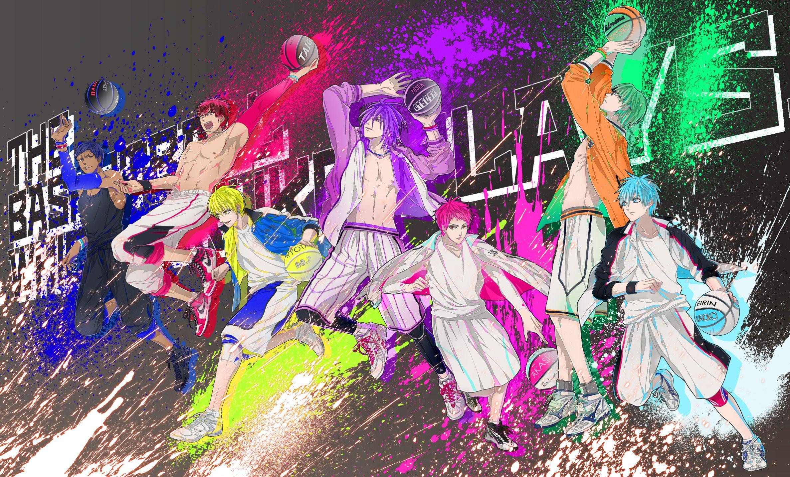

Biografi Pemeran Koruko No Basket
Kuroko Tetsuya
Kuroko adalah pemuda berambut biru muda dengan kulit pucat dan wajah datar. Kuroko merupakan mantan anggota klub basket SMP Teiko dan merupakan anggota ke-enam kiseki no sedai (generation of miracle/generasi keajaiban). Saat ini
merupakan anggota dari klub basket SMU Seirin yang bernomor punggung 11. Merupakan partner dari Kagami Taiga yang sama-sama masih kelas 10. Diperkirakan posisi nya small forward (SF).
Kagami Taiga
Merupakan anak kelas 10 SMU Seirin yang datang dari Amerika. Memiliki rambut merah kehitaman, tinggi besar, kuat dan memiliki emosi yang meluap-luap. Keahlian Kagami adalah lompatannya yang sangat tinggi, dan juga merupakan
cahaya dari Kuroko. bernomor punggung 10. Posisi nya power forward (PF).
Kise Ryota
Adalah anggota klub basket SMU Kaijo dengan nomor punggung 7. Kise merupakan salah satu anggota kiseki no sedai yang memiliki kemampuan meniru teknik dan kemampuan lawan. Bekerja sampingan sebagai model. Memiliki rambut kuning,
mata kuning, dan kulit putih. Memiliki kebiasaan memanggil orang yang disegani nya dengan tambahan '-cchi' seperti 'Kurokocchi' dan mengakhiri kalimatnya dengan '-ssu'.
Midorima Shintaro
Adalah anggota klub basket SMU Shutoku dengan nomor punggung 6. Bertubuh tinggi, memiliki rambut dan mata hijau. Midorima biasanya memakai kacamata. Juga merupakan salah satu dari kiseki no sedai yang memiliki kemampuan menembak
bola yang sangat akurat. Jarinya selalu dibalut perban dan dia selalu menjaga kuku-kukunya. Sangat mempercayai ramalan dan memiliki tingkat kepercayaan diri yang sangat tinggi.
Aomine Daiki
Mantan partner Kuroko di Teiko (termasuk anggota kiseki no sedai). Merupakan Kartu AS klub basket SMA Touo. Memiliki rambut biru tua, tubuhnya tinggi besar dan kulit kecoklatan. Bernomor punggung 5. Kata-kata kesukaannya 'yang
dapat mengalahkanku adalah diriku sendiri'.
Murasakibara Atsushi
Merupakan mantan anggota kiseki no sedai. Memiliki tinggi sekitar 2 meter lebih, berambut dan bermata ungu. Merupakan seorang center yang kuat, sekarang ia bermain dengan SMU Yosen. Ia cukup bodoh dan pemalas pada hal-hal lain,
akan tetapi ia sangat jenius dalam permainan basket. Sangat suka makan.
Akashi Seijuro
Mantan kapten klub basket SMP Teiko, kapten klub basket SMA Rakuzan dan juga merupakan salah satu anggota kiseki no sedai. Memiliki rambut merah dan mata merah-kuning keemasan. Untuk ukuran seorang pemain basket SMA, ia memiliki
tinggi badan yang cukup pendek. Kemampuan khususnya adalah Mata Kaisar/Emperor Eye. Memiliki dua kepribadian.